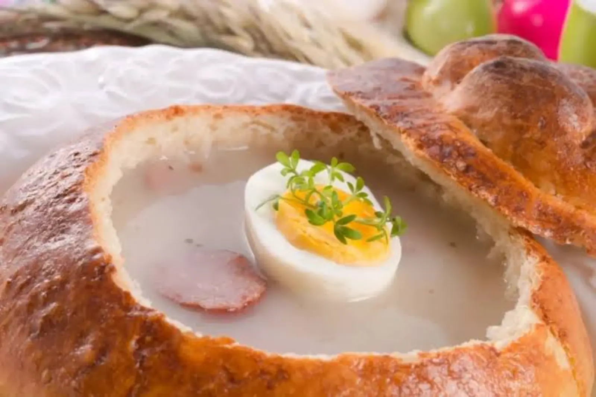

ARTICLE • October 13, 2026
Podlasie Cuisine — Kibiny, Kartacze, and Potato Babka
Podlasie cuisine is a mix of Polish, Tatar, Orthodox, and Jewish traditions. Discover what is worth eating in a region where cultures cross — with specific places and prices.

Podlasie is the most multicultural region of Poland. Poles, Tatars, Russians, Jews, and Lithuanians lived here side by side — and each of these cultures brought something to the local cuisine. That is why Podlasie cuisine is so diverse and unexpected. The Tatars, who settled in Podlasie as early as the 14th century (brought by Grand Duke Vytautas of Lithuania), brought kibiny, pierogi, and the tradition of roasting meat. The Orthodox — fasting cuisine based on mushrooms and groats. The Jews — bread, fish, and challah. The Lithuanians — kartacze and potato babka. The result is one of the most diverse regional cuisines in Poland — little known outside the region, but authentic and deeply rooted in tradition.
This guide shows 6 dishes you must try in Podlasie, and specific places in Białystok, Sokółka, Supraśl, and Białowieża where you can eat them in an authentic version.
Tatar and Multicultural Dishes
1. Kibiny
Tatar meat pastries — baked or fried. A classic of Podlasie cuisine that has survived for centuries. The dough is thin, the filling is meat with onion, seasoned with pepper and salt. They are served warm, sometimes with broth. Kibiny is one of the most recognizable dishes of Tatar cuisine — the Tatars settled in Podlasie as early as the 14th century and for centuries preserved their own culture, religion (Islam), and cuisine. Kibiny are traditionally baked in an oven (not fried), and the filling is made from beef or lamb, finely chopped, with onion and spices. The dough is thin but durable — thanks to this, kibiny can be eaten by hand, dipped in broth or sauce. In the Tatar version, kibiny are smaller than pierogi — about 5–6 cm long. The best are found in milk bars in Białystok and Sokółka, as well as in Kruszyniany, where a Tatar community still lives.
Price: 15–25 PLN per portion (6–8 pieces). Where: Bar Mleczny Krokus (Białystok, ul. Sienkiewicza 22), Karczma Tatarska (Kruszyniany, near Sokółka), Bar Mleczny Babka (Sokółka, ul. Grodzieńska 12).
2. Kartacze
Large potato dumplings stuffed with meat — hearty, substantial, rural. They are served with cracklings or sour cream. In Podlasie, they appear at every wedding and every major holiday. The secret of a good kartacz is freshly grated potatoes and well-seasoned meat. Kartacze differ from ordinary dumplings or pierogi in that they are much larger (even 8–10 cm long) and have a more “meaty” character — the filling makes up even 1/3 of the mass. The dough is made from grated raw potatoes, potato flour, and eggs, formed into balls, stuffed with minced meat and onion, and boiled in salted water. Kartacze is a dish from the Lithuanian and Belarusian tradition — it appeared in Podlasie with settlers from those regions. They are served with bacon cracklings, onion, or sour cream. In the wedding version, kartacze are sometimes served with mushroom sauce.
Price: 20–35 PLN per portion (2–3 pieces). Where: Karczma Podlaska (Białystok, ul. Rynek Kościuszki 15), Bar Mleczny Krokus (Białystok), Karczma Litewska (Sejny, ul. Piłsudskiego 4).
Potato Dishes
3. Potato Babka
A baked dish of grated potatoes, bacon, onion, and eggs. It is served for dinner with sour cream or mushroom sauce. In the rural version — with lard and marjoram. A simple but deeply filling dish. Potato babka is one of those dishes that in Podlasie is eaten primarily for lunch, especially on Sundays. The dough is made from grated raw potatoes mixed with bacon, onion, eggs, and flour, seasoned with salt, pepper, and marjoram, then baked in the oven or a bread oven for 1–1.5 hours. The result is a compact, aromatic babka with a crispy crust and a soft interior. Potato babka is also a fasting dish — in the version without bacon, with dried mushrooms, it is served at Christmas Eve. In many homes in Podlasie, babka is baked in large trays and eaten for several days — it is a dish that tastes better the next day.
Price: 20–30 PLN per portion. Where: Karczma Podlaska (Białystok), Bar Mleczny Krokus (Białystok), Karczma Litewska (Sejny).
4. Potato Kiszka
A sausage made of potato mass with bacon, baked in the oven or on a sheet. It is served with onion and mustard. In the Podlasie version — with the addition of blood, which gives it a characteristic dark colour and deep flavour. Potato kiszka is a dish from the rural tradition — in Podlasie it is usually prepared after pig slaughter (usually in the autumn-winter period), when fresh meat and blood are available. The dough is made from grated potatoes, bacon, onion, and blood (in the classic version), seasoned with salt and pepper, stuffed into casings, and baked in the oven. Potato kiszka differs from black pudding (kaszanka) in that the base is potatoes, not groats — this gives it a more “dumpling-like” consistency and a milder flavour. It is served hot, with onion, mustard, or horseradish. In the blood-free version (increasingly common), kiszka is lighter and milder in flavour.
Price: 15–25 PLN per portion. Where: Karczma Podlaska (Białystok), Karczma Litewska (Sejny), local butcher shops in Podlasie (Białystok, Łomża).
Pierogi and Bakes
5. Pierogi with Cabbage and Mushrooms
A traditional dish on every Podlasie table. Served at Christmas Eve, weddings, and every day. Podlasie is famous for pierogi with mushroom filling — mushrooms gathered in the Białowieża Forest are the best in Poland. The filling is made from sauerkraut and dried mushrooms (usually porcini or bay bolete), seasoned with marjoram, pepper, and onion. In the Podlasie version, fresh mushrooms (bay bolete, chanterelle) are sometimes added, which gives the pierogi a more expressive flavour. They are served with cracklings, onion, or sour cream. This is a dish that in Podlasie is eaten not only at Christmas Eve — it is served in milk bars all year round. In the Białowieża Forest region, pierogi with mushrooms are virtually the hallmark of local cuisine — in Białowieża and Hajnówka they are served in almost every restaurant.
Price: 18–28 PLN per portion. Where: Bar Mleczny Krokus (Białystok), Karczma Podlaska (Białystok), Karczma Żubr (Białowieża, ul. Waszkiewicza 28).
6. Sękacz
Yeast cake baked on a rotating spit, layer by layer. The result — a tall, brown structure with a crispy crust and soft interior. Sękacz is a Podlasie dessert, baked for holidays and celebrations. Sękacz is one of the most characteristic cakes of Podlasie and Lithuanian cuisine — the tradition of baking on a rotating spit dates back to the times when there were no ovens yet, and dough was baked over a fire. The name comes from the characteristic “knots” (sęki) — irregularities that form when successive layers of dough flow down the spit and burn to a golden colour. Sękacz is baked for up to 3–4 hours, pouring successive layers of dough over the spit. The result is a cake with a structure similar to French gâteau à la broche, but with its own, Podlasie character. In the traditional version, sękacz is served at holidays and weddings — in the modern version, it is also a restaurant dessert.
Price: 40–80 PLN for a whole sękacz, 8–15 PLN per slice. Where: Cukiernia Sowa (Białystok, ul. Sienkiewicza 22), Cukiernia Podlaska (Supraśl, ul. Kościelna 5), local bakeries in Białystok and Białowieża.
Where to Eat — Specific Places
Białystok (centre and surroundings):
- Bar Mleczny Krokus (ul. Sienkiewicza 22) — a legendary milk bar from 1959, kibiny, kartacze, potato babka.
- Karczma Podlaska (ul. Rynek Kościuszki 15) — a classic of Podlasie cuisine, kartacze, potato kiszka.
- Restauracja Carska (ul. Legionowa 2) — multicultural cuisine of Podlasie, Tatar, Russian, Polish dishes.
Sokółka, Kruszyniany, Supraśl:
- Karczma Tatarska (Kruszyniany, near Sokółka) — Tatar cuisine: kibiny, pierogi, roast meats.
- Bar Mleczny Babka (Sokółka, ul. Grodzieńska 12) — cheap and authentic Podlasie dishes, potato babka.
- Cukiernia Podlaska (Supraśl, ul. Kościelna 5) — sękacz, gingerbread, regional bakes.
Białowieża and Hajnówka:
- Karczma Żubr (Białowieża, ul. Waszkiewicza 28) — pierogi with mushrooms from the Białowieża Forest, potato kiszka.
- Restauracja Pokusa (Białowieża, ul. Waszkiewicza 57) — Podlasie cuisine in a modern version.
- Bar Mleczny in Hajnówka (ul. Piłsudskiego 8) — home-style Podlasie cuisine, pierogi, babka.
Practical Tips
- Buy kibiny in milk bars and Tatar taverns — the best are in Kruszyniany, where a Tatar community still lives.
- Pierogi with mushrooms in Podlasie are exceptional — mushrooms from the Białowieża Forest have a more intense flavour than anywhere else in Poland. Try them in Białowieża or Hajnówka.
- Order kartacze with crackling topping — this is the most traditional way to serve them.
- Buy sękacz in regional pastry shops (Białystok, Supraśl) — supermarkets sell fakes that have nothing to do with real sękacz.
- Potato kiszka is mainly available in the autumn-winter period, after pig slaughter — outside this season it is hard to find.
- Restaurants in the centre of Białystok are more expensive and touristy. Go 2 streets further — to milk bars and taverns — where the food is cheaper and better.
Summary
Podlasie cuisine is borderland cuisine — Polish, Tatar, Orthodox, and Jewish traditions meet on one plate. Hearty, earthy, deeply rooted in the multicultural history of the region. Instead of fashionable dishes, you will find classics here: kibiny, kartacze, potato babka, potato kiszka, pierogi with mushrooms, sękacz. Plan your trip to Podlasie to try at least four of the six dishes — and preferably eat them in milk bars and Tatar taverns, where the cuisine is still home-style, not touristy. If you like borderland regions, also check our pages on Subcarpathian cuisine and Lublin cuisine — the cuisine looks similar there, but with its own accents.